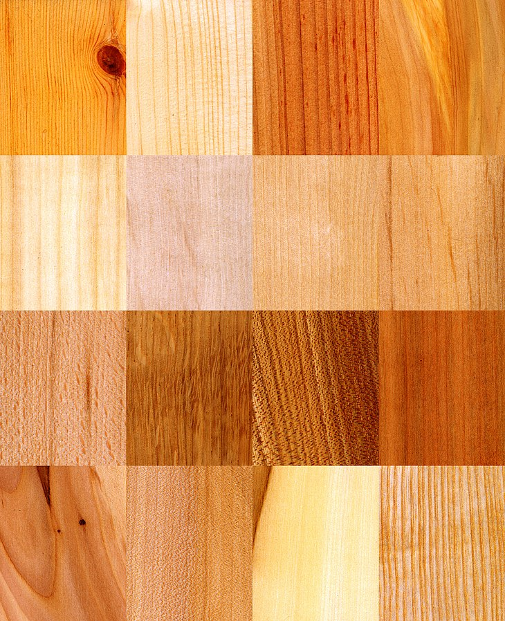

Building a Blog
About Wood
Wood is a porous and fibrous structural tissue found in the stems and roots of trees and other woody plants. It is an organic material – a natural composite of cellulose fibers that are strong in tension and embedded in a matrix of lignin that resists compression. Wod is sometimes defined as only the secondary xylem in the stems of trees,or it is defined more broadly to include the same type of tissue elsewhere such as in the roots of trees or shrubs.In a living tree it performs a support function, enabling woody plants to grow large or to stand up by themselves. It also conveys water and nutrients between the leaves, other growing tissues, and the roots. Wood may also refer to other plant materials with comparable properties, and to material engineered from wood, or woodchips or fiber.

Wood has been used for thousands of years for fuel, as a construction material, for making tools and weapons, furniture and paper.
More recently it emerged as a feedstock for the production of purified cellulose and its derivatives, such as cellophane and cellulose acetate.
As of 2005, the growing stock of forests worldwide was about 434 billion cubic meters, 47% of which was commercial.
In 1991 approximately 3.5 billion cubic meters of wood were harvested. Dominant uses were for furniture and building construction.
Wood can be broadly classified as Softwood and Hardwood. Density is a major determinant of the strength of wood. Hardwoods, being denser than the softwoods, are stronger and more durable.
According to ‘Madan Mehta, Walter Scarborough & Diane Armpriest’ (Author of Building Construction), the difference between hardwood and softwood is not only based on the density of the wood. This is because several hardwoods are lighter than softwoods. Generally, the distinction between these two types of woods is based on their botanical characteristics.
Let’s learn about the different types of wood used for furniture and in construction.

Different wood types available in nature possess different properties, color, texture, and strength. As a homeowner, it’s important to know the different types of wood for building and construction and their applications.
Creating Table
| Name |
Place |
Country |
| Angili |
Maharashtra |
India |
| Axlewood |
Uttar Pradesh |
India |
| Bamboo |
Assam |
India |
| Babul |
Karnataka |
India |
| Benteak |
Kerala |
India |
| Casuarina |
Tamil Nadu |
India |